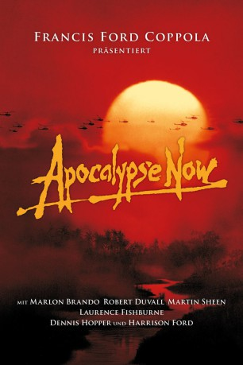
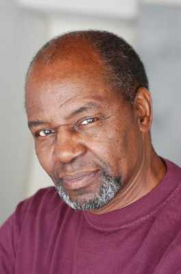
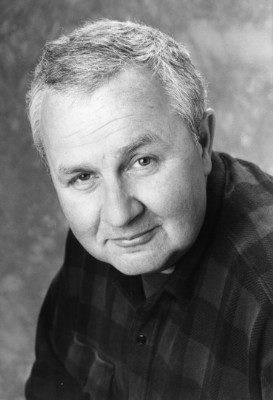
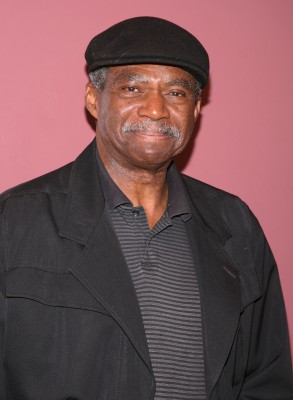

#218 Apocalypse Now
Auszeichnungen: 2 Oscars gewonnen für 6 Oscars nominiert 3 GoldenGlobes gewonnen 2 BAFTA-Awards gewonnen
 
 IMDB-Wertung: 8.5 / 10
IMDB-Wertung: 8.5 / 10  IMDB-TOP-Platzierung: 50
IMDB-TOP-Platzierung: 50  Metascore: 94
Metascore: 94 
Im Jahr 1969, mitten im Vietnamkrieg, erhält Captain Benjamin L. Willard den Auftrag, den abtrünnigen Colonel Walter E. Kurtz zu liquidieren. Dieser hat sich von der amerikanischen Militärführung distanziert und lässt sich nicht mehr kontrollieren. Im kambodschanischen Dschungel hat er sich ein eigenes „Reich“ aufgebaut, über das er gebieterisch herrscht. Captain Willard macht sich in einem Patrouillenboot samt Besatzung von Saigon aus auf den Weg durch den Dschungel. Die Reise der Männer entwickelt sich zu einem Höllentrip durch die Absurditäten eines sinnentleerten Kriegs und offenbart, analog zur Romanvorlage, die Abgründe der menschlichen Seele.
Jahr: 1979
Dauer: 153 Minuten
FSK: 16
Land: USA Studio: United ArtistsTonspuren: DTS - ,
Untertitel:
Auflösung: 1080p (1920×816) Größe: 10547 MB
Genre: Drama, Krieg
Regisseur:  Francis Ford Coppola
Francis Ford Coppola
Drehbuch: John Milius, Francis Ford Coppola, Michael Herr, Joseph Conrad
Soundtrack: Carmine Coppola, Francis Ford Coppola
Darsteller:
 Marlon Brando als Colonel Walter E. Kurtz
Marlon Brando als Colonel Walter E. Kurtz Martin Sheen als Captain Benjamin L. Willard
Martin Sheen als Captain Benjamin L. Willard Robert Duvall als Lieutenant Colonel Bill Kilgore
Robert Duvall als Lieutenant Colonel Bill Kilgore Frederic Forrest als Jay 'Chef' Hicks
Frederic Forrest als Jay 'Chef' Hicks Sam Bottoms als Lance B. Johnson
Sam Bottoms als Lance B. Johnson Laurence Fishburne als Tyrone 'Clean' Miller
Laurence Fishburne als Tyrone 'Clean' Miller-  Albert Hall als Chief Phillips
 Harrison Ford als Colonel Lucas
Harrison Ford als Colonel Lucas Dennis Hopper als Photojournalist
Dennis Hopper als Photojournalist G.D. Spradlin als General Corman
G.D. Spradlin als General Corman Scott Glenn als Lieutenant Richard M. Colby
Scott Glenn als Lieutenant Richard M. Colby-  James Keane als Kilgore's Gunner
- Kerry Rossall als Mike from San Diego
 Colleen Camp als Playmate, Miss May
Colleen Camp als Playmate, Miss May- George Cantero als Soldier with Suitcase
 Damien Leake als Machine Gunner
Damien Leake als Machine Gunner Marc Coppola als AFRS Announcer
Marc Coppola als AFRS Announcer- Aurore Clément als Roxanne Sarrault, Redux version only
- Roman Coppola als Francis de Marais, Redux version only
- Francis Ford Coppola als Director of TV Crew , uncredited
 R. Lee Ermey als Eagle Thrust Seven Helicopter Pilot , uncredited
R. Lee Ermey als Eagle Thrust Seven Helicopter Pilot , uncredited-  Charles Robinson als Soldier with Colby , uncredited
 Charlie Sheen als Extra , uncredited
Charlie Sheen als Extra , uncredited- Vittorio Storaro als TV Photographer , uncredited
- Jerry Ziesmer als Jerry, Civilian
- Bo Byers als MP Sergeant #1
- Ron McQueen als Injured Soldier
- Tom Mason als Supply Sergeant
- Cynthia Wood als Playmate of the Year
- Linda Carpenter als Playmate
- Jack Thibeau als Soldier in Trench
- Glenn Walken als Lieutenant Carlsen
- Herb Rice als Roach
- William Upton als Spotter
- Larry Carney als MP Sergeant #2
- Daniel Kiewit als Major from New Jersey
- Father Elias als Catholic Priest
- Bill Graham als Agent
- Hattie James als Mrs. Miller, Clean's Mother
- Jerry Ross als Johnny from Malibu / Mike from San Diego
- Dick White als Helicopter Pilot
- Christian Marquand als Hubert de Marais, Redux version only
- Michel Pitton als Philippe de Marais, Redux version only
- Frank Villard als Gaston de Marais, Redux version only
- David Olivier als Christian de Marais, Redux version only
- Chrystel Le Pelletier als Claudine, Redux version only
- Robert Julian als The Tutor, Redux version only
- Yvon LeSeaux als Sergeant Le Fevre, Redux version only
- Gian-Carlo Coppola als Gilles de Marais, Redux version only
- Henri Sadardeil als French Soldier #1, Redux version only
Datei: X:\1979\Apocalypse Now (1979, FSK16, 1920x816).mkv seit 14.02.2015
Festplatte: HD 1971-1979
 Es gibt insgesamt 29 Filme in der Gruppe '1979'
Es gibt insgesamt 29 Filme in der Gruppe '1979'